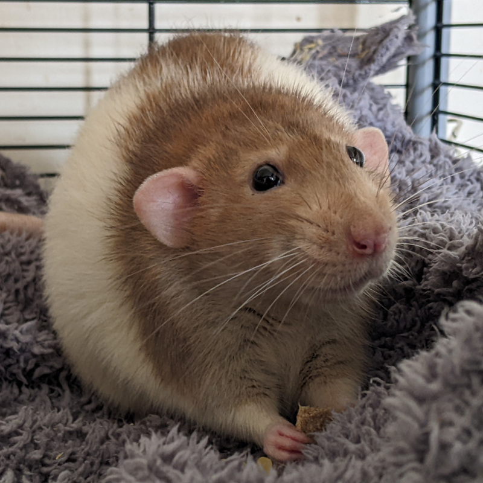
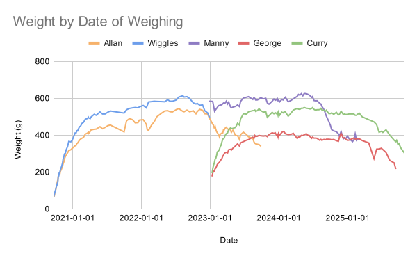
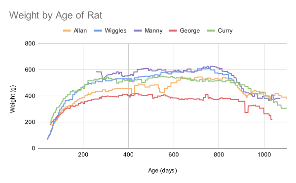
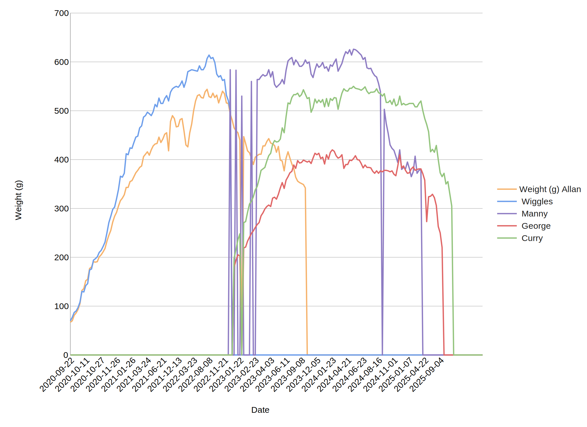
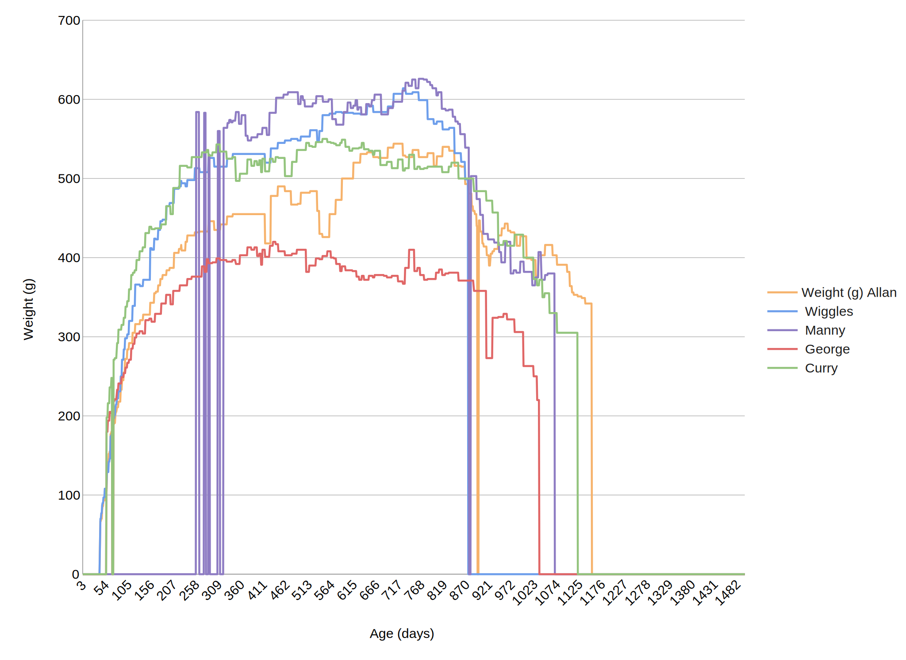
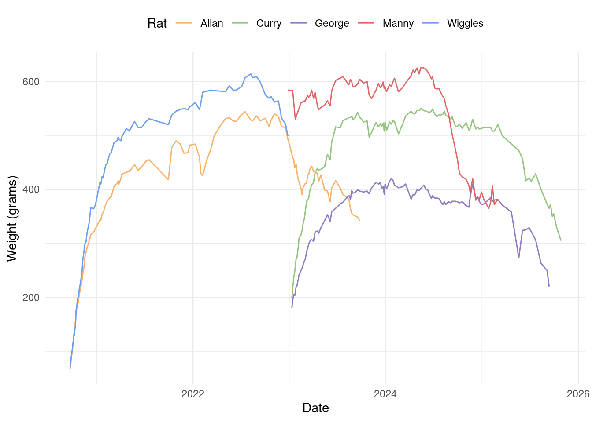

| Date | Allan | Wiggles | Manny | George | Curry |
|---|---|---|---|---|---|
| 2020-09-22 | 67 | 70 | NA | NA | NA |
| 2020-09-24 | 70 | 77 | NA | NA | NA |
| 2020-09-26 | 81 | 87 | NA | NA | NA |
| 2020-09-27 | 86 | 90 | NA | NA | NA |
| 2020-09-29 | 93 | 97 | NA | NA | NA |
| 2020-10-02 | 105 | 108 | NA | NA | NA |
Rats Stats
Introduction
From 2020 to 2025, I had five wonderful pet rats: Allan, Wiggles, Manny, George, and Curry.

I tracked how much each rat weighed on a regular basis as recommended by the RSPCA.1 While there isn’t a universal ‘healthy weight’ across rats, the Isamu line for example typically fall in the 500-650g range when fully grown.2 As part of monitoring for sudden changes, it’s helpful to visualise this date.
Dataset
The main data is stored as a CSV file with the first column being the ISO date and then a column for the weight in grams of each rat. The dates are not complete or evenly spaced and, for a variety of reasons, not every rat has a weight recorded for each date.
A much smaller table contains the list of rats, their (estimated) dates of birth, and dates of death. Rats only live for 2-3 years!
| Birthdate | Deathdate | |
|---|---|---|
| Allan | 2020-08-12 | 2023-09-25 |
| Wiggles | 2020-08-12 | 2022-12-28 |
| Manny | 2022-04-13 | 2025-03-06 |
| George | 2022-11-17 | 2025-09-16 |
| Curry | 2022-11-17 | 2025-10-31 |
Problem
From this, I want to visualise the weight time series in two ways: by date and by the age of the rat. Ideally I also want to do this from the same data, i.e. without creating a separate dataset of rat ages.


This is possible in standard spreadsheet software like Microsoft Excel, Google Sheets, or LibreOffice Calc using VLOOKUP. From the same dataset, it can create a table of rat weights by age using formulae like:
=IFNA(VLOOKUP(RAT_BIRTHDAY + RAT_AGE, WEIGHT_DATA_RANGE, INDEX_OF_RAT))It requires some maintenance to use though and, due to differing implementations of commands, is dependent on the specific spreadsheet it was created in. If the same spreadsheet is opened in different software, the plots may break.


Tidy Solution
It’s possible to recreate this in a more robust way using R with tidyverse and lubridate. First, I gather all the weighings as separate data points by date, ignore the ones that don’t have a reading, and calculate the age of the rat in days for that weighing.
weights <- raw_weights %>%
gather(key = "Rat", value = "Weight", -Date) %>%
drop_na(Weight) %>%
mutate(
Date = as.Date(Date),
Age = interval(lives[Rat, "Birthdate"], Date) %/% days(1)
)Then I plot the weights by date and by age using ggplot, copying the same colour scheme that was used in Google Sheets.


Finally, I added two extra columns to Table 2 to replicate a dashboard I used to have, letting me quickly check how old my rats were when people asked me.
| Birthdate | Deathdate | Age | Years | |
|---|---|---|---|---|
| Allan | 2020-08-12 | 2023-09-25 | 1139 | 3.1 |
| Wiggles | 2020-08-12 | 2022-12-28 | 868 | 2.4 |
| Manny | 2022-04-13 | 2025-03-06 | 1058 | 2.9 |
| George | 2022-11-17 | 2025-09-16 | 1034 | 2.8 |
| Curry | 2022-11-17 | 2025-10-31 | 1079 | 3.0 |
Conclusion
Plotting multiple time series using spreadsheet software is possible, but doing it in a robust way that allows visualising both by date and by series age is difficult. R on the other hand could do this without breaking a sweat.
Using R also opens the possibility of doing more complicated analysis than would be realistic to do in a spreadsheet. For example, are there correlations between the rats’ relative weights by date? Do they share peaks and troughs? Or for the by-age data, could we use this to build a general model for the weight of a rat over time?
Footnotes
Rat Health and Welfare, RSPCA Companion Animals Department. Accessed 2020-09-24.↩︎
Feeding and Nutrition by Jemma Fettes, Isamu Rats. Accessed 2025-12-12.↩︎